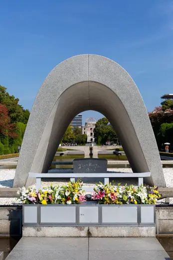
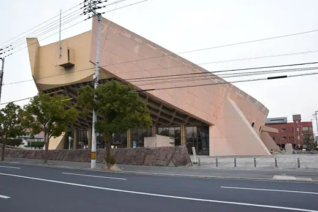
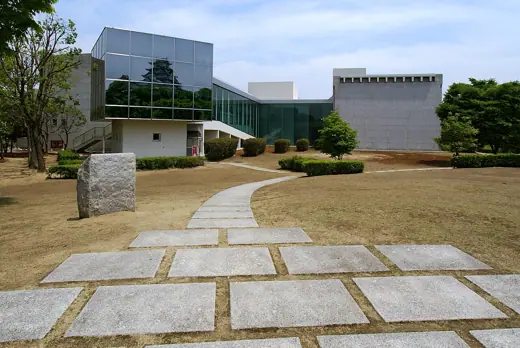
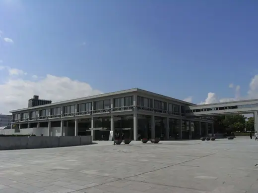
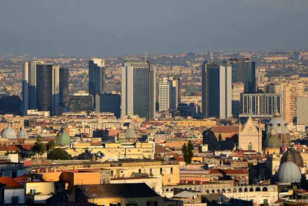
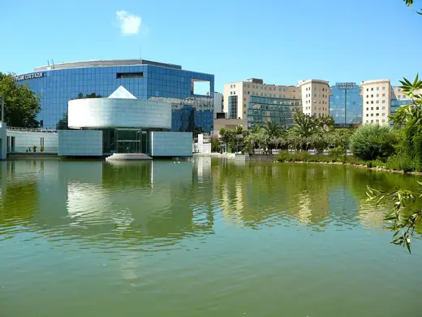
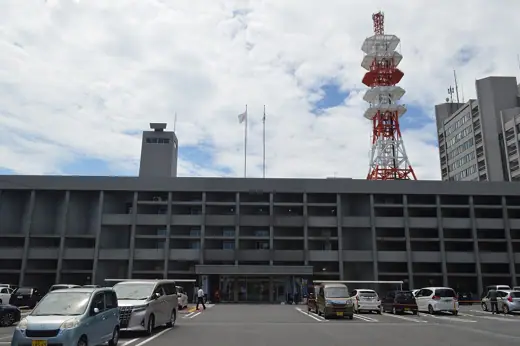
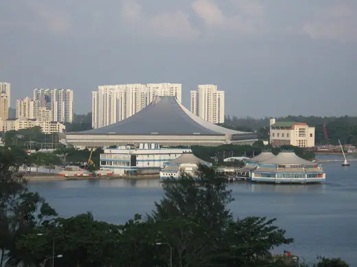
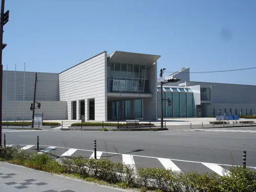

Kenzō Tange buildings 24
Sort

Cenotaph for the A-Bomb Victims1952 · Hiroshima Kagawa Prefectural Government Office1958 · Takamatsu
Kagawa Prefectural Government Office1958 · Takamatsu
Kagawa Prefectural Gymnasium1964 · Takamatsu Yoyogi National Gymnasium1964 · Tokyo
Yoyogi National Gymnasium1964 · Tokyo Shizuoka Press and Broadcasting Center1967 · Tokyo
Shizuoka Press and Broadcasting Center1967 · Tokyo
Hyōgo Prefectural Museum of History1983 · Himeji
International Conference Center Hiroshima1989 · Hiroshima Tokyo Metropolitan Government Building1991 · Tokyo
Tokyo Metropolitan Government Building1991 · Tokyo
Centro Direzionale di Napoli1995 · Naples Fuji Television Building1996 · Tokyo
Fuji Television Building1996 · Tokyo
Asian Art Museum (Nice)1998 · Nice Hiroshima Peace Memorial Museum1955 · Hiroshima
Hiroshima Peace Memorial Museum1955 · Hiroshima
Imabari City Hall1958 · Imabari Kurashiki City Art Museum (former City Hall)1960 · Kurashiki
Kurashiki City Art Museum (former City Hall)1960 · Kurashiki St. Mary's Cathedral1964 · Tokyo
St. Mary's Cathedral1964 · Tokyo Yamanashi Press and Broadcasting Centre1966 · Kofu
Yamanashi Press and Broadcasting Centre1966 · Kofu Embassy of Kuwait, Tokyo1970 · Tokyo
Embassy of Kuwait, Tokyo1970 · Tokyo Skopje Railway Station1981 · Skopje
Skopje Railway Station1981 · Skopje
Singapore Indoor Stadium1987 · Singapore Yokohama Museum of Art1989 · Yokohama
Yokohama Museum of Art1989 · Yokohama United Nations University Headquarters1992 · Tokyo
United Nations University Headquarters1992 · Tokyo Shinjuku Park Tower1994 · Tokyo
Shinjuku Park Tower1994 · Tokyo
Hagi Uragami Museum1996 · Hagi